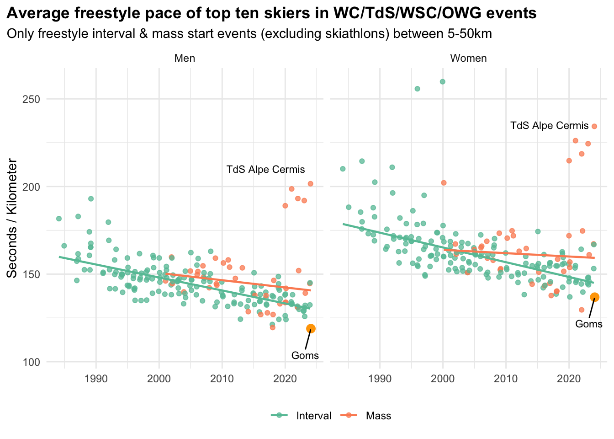

A reader emailed me to comment on the blistering pace of the recent 20k freestyle mass start races in Goms. And indeed, they were quite fast!

Everything I’ve heard suggests that the course was very icy and fast, so that was surely a contributing factor. It is a little strange maybe to have such a fast pace in a mass start these days, but it’s not unprecedented.
The men’s race was the fastest (by this measure, average pace of the top ten) that I have on record, but just barely. The women’s was only the second fastest. I’d certainly call them mild outliers for mass start races, but if you squint maybe within the realm of possibility given the “normal” variation in the scatterplot above.
| Fastest Men's Freestyle Races | |||||||
| Date | Event | Nation | Site | Km | Format | Avg Leader Pace | Winning Time |
|---|---|---|---|---|---|---|---|
| 2024-01-28 | wc | SUI | Goms | 20 | Mass | 118.89 | 00:39:25.2 |
| 2018-01-04 | tds | GER | Oberstdorf | 15 | Mass | 119.53 | 00:29:49.8 |
| 2017-12-16 | wc | ITA | Toblach | 15 | Interval | 121.27 | 00:29:58.8 |
| 2020-02-15 | wc | SWE | Östersund | 15 | Interval | 124.11 | 00:30:41.5 |
| 2018-12-30 | tds | ITA | Toblach | 15 | Interval | 124.18 | 00:30:34.1 |
| 2012-11-24 | wc | SWE | Gaellivare | 15 | Interval | 124.28 | 00:30:37.0 |
| 2023-02-04 | wc | ITA | Toblach | 10 | Interval | 125.86 | 00:20:46.4 |
| 2019-12-31 | tds | ITA | Toblach | 15 | Interval | 126.25 | 00:31:02.5 |
| 2016-02-14 | wc | SWE | Falun | 15 | Mass | 126.92 | 00:31:42.5 |
| 2018-01-28 | wc | AUT | Seefeld | 15 | Mass | 126.93 | 00:31:37.9 |
| Fastest Women's Freestyle Races | |||||||
| Date | Event | Nation | Site | Km | Format | Avg Leader Pace | Winning Time |
|---|---|---|---|---|---|---|---|
| 2021-12-31 | tds | GER | Oberstdorf | 10 | Mass | 129.60 | 00:21:30.8 |
| 2024-01-28 | wc | SUI | Goms | 20 | Mass | 136.84 | 00:45:26.3 |
| 2020-02-15 | wc | SWE | Östersund | 10 | Interval | 136.99 | 00:21:49.7 |
| 2017-03-04 | wsc | FIN | Lahti | 30 | Mass | 137.77 | 01:08:36.8 |
| 2012-11-24 | wc | SWE | Gaellivare | 10 | Interval | 138.31 | 00:22:31.8 |
| 2017-12-16 | wc | ITA | Toblach | 10 | Interval | 138.64 | 00:22:40.1 |
| 2022-03-12 | wc | SWE | Falun | 10 | Interval | 139.75 | 00:22:34.4 |
| 2018-01-04 | tds | GER | Oberstdorf | 10 | Mass | 140.10 | 00:23:16.5 |
| 2018-01-28 | wc | AUT | Seefeld | 10 | Mass | 140.31 | 00:23:08.5 |
| 2015-11-28 | wc | FIN | Ruka | 5 | Interval | 142.19 | 00:11:23.8 |